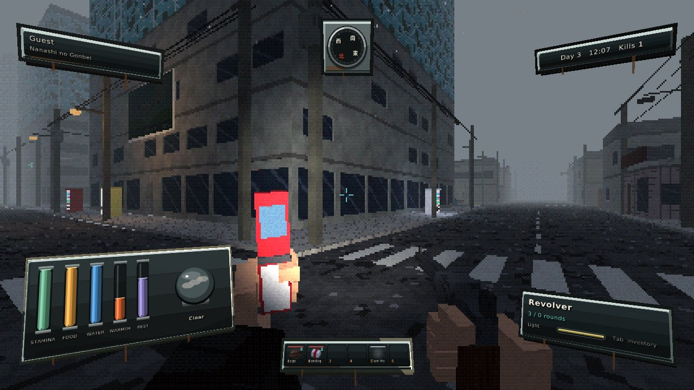
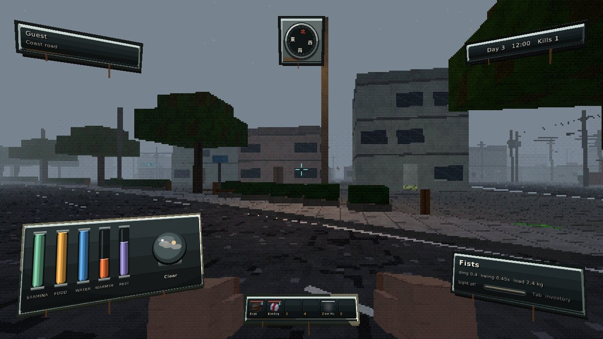
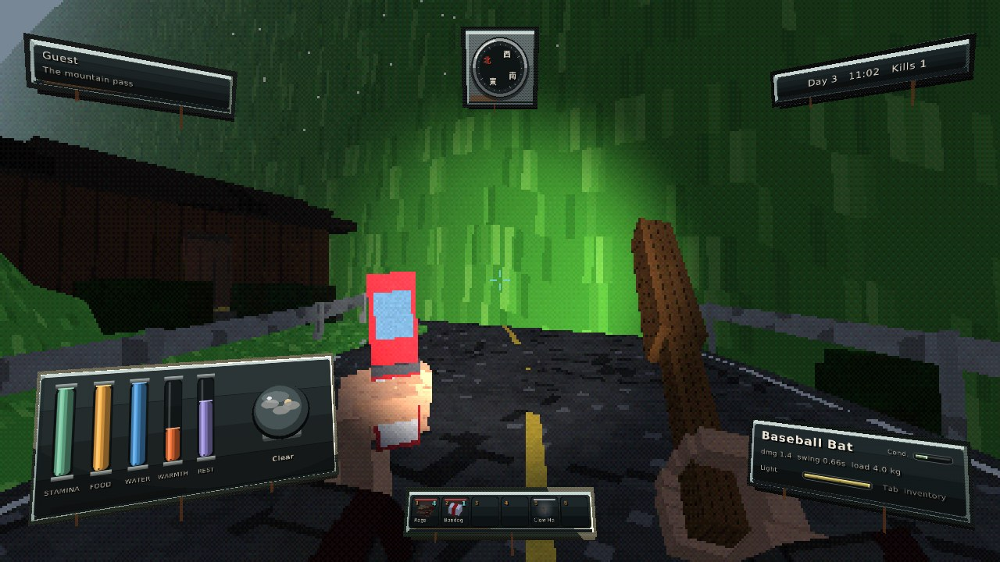
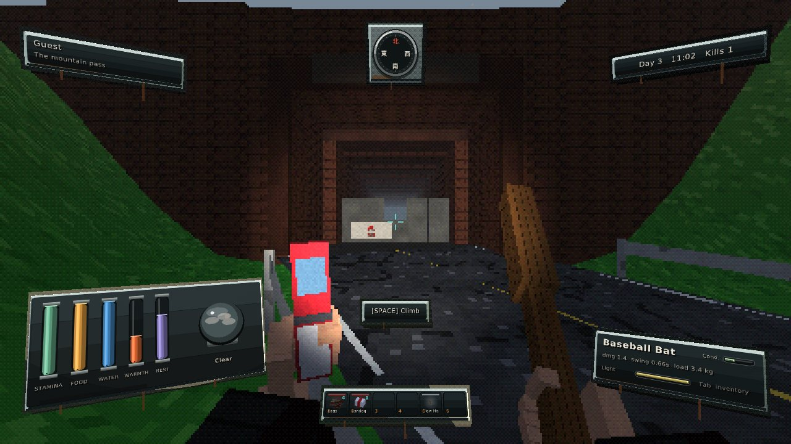
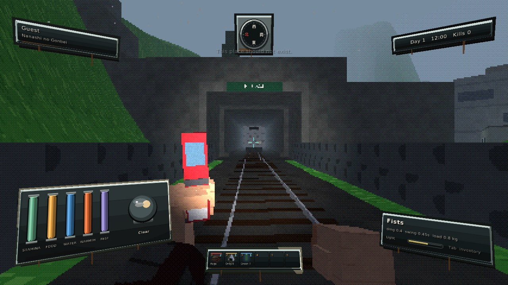
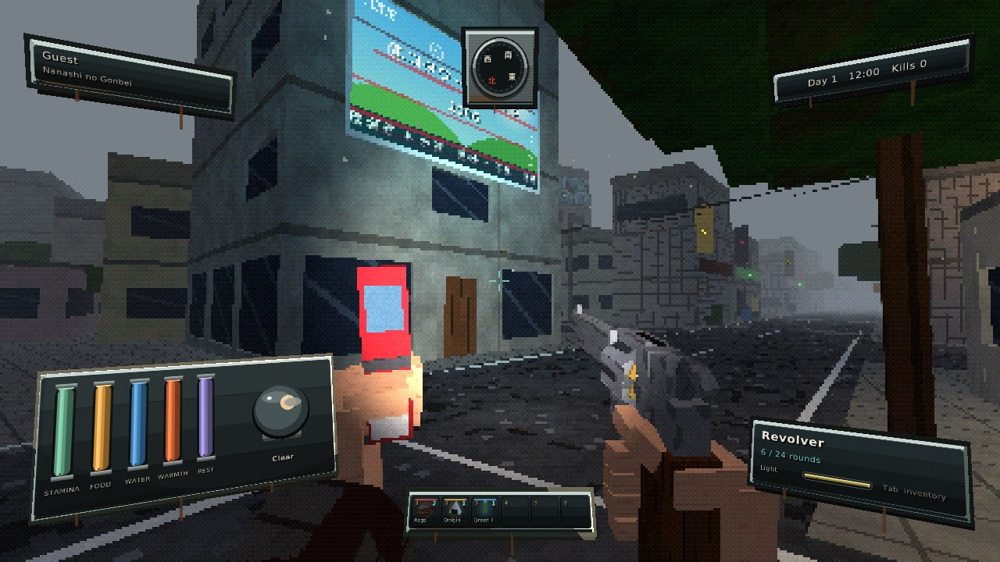
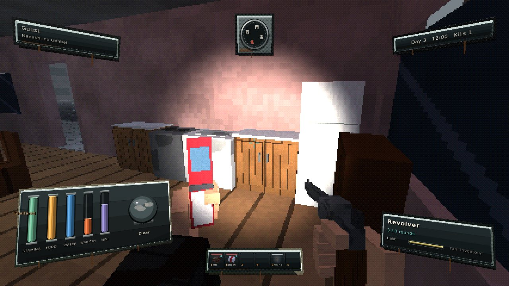
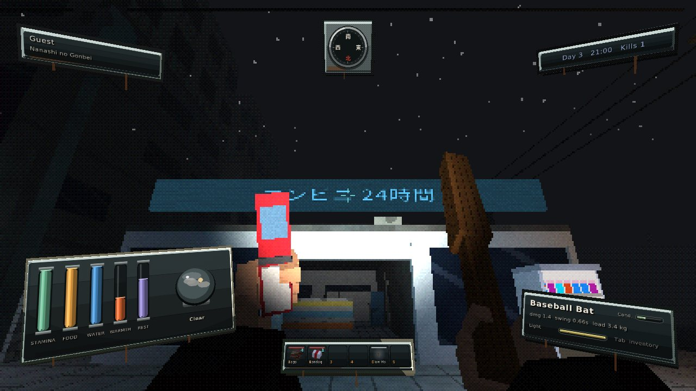
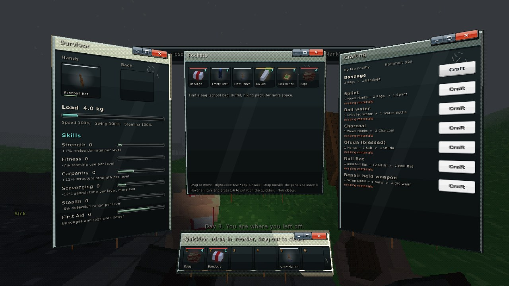
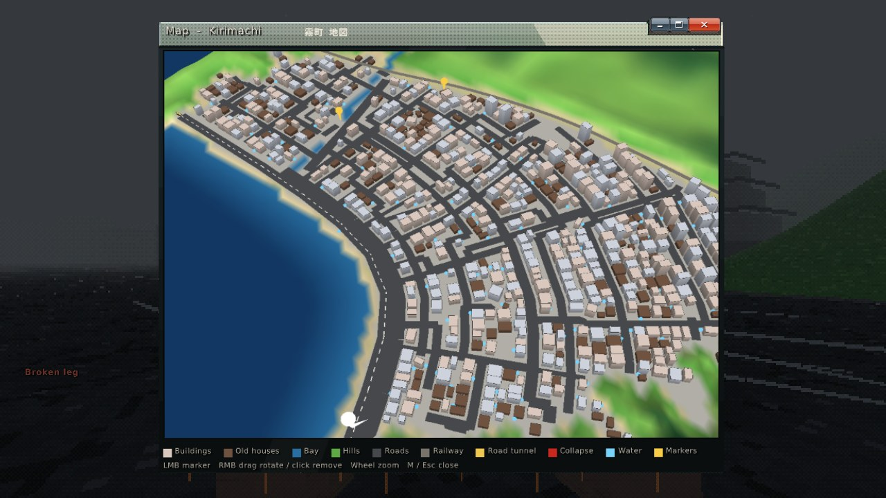

Japan, 2006. The bright, green future did not arrive. Survive a fog-bound coastal town as Nanashi no Gonbei.
Zankō 2006 is a first-person survival horror sandbox in the style of the original PlayStation. Kirimachi, a town on the bay, has been told to stay indoors. Search homes, shops and offices for food, water and tools, bandage your wounds, build a base and ward it against what walks at night. Leave the town and the hills start to take your mind.
Every street, building and room is laid out by hand: winding, stepped streets climbing from the bay, a coast road on a seawall, a river under seven bridges, a railway tunnelling into the mountain, and a hairpin pass up to a sealed brick tunnel.
Hunger, thirst, warmth, sleep, sickness, infection and broken bones. Craft bandages and splints, boil water, grow daikon, repair your weapons.
Katana, fire axe, baseball bat, revolver. Guard and parry, or sneak past. Some things only an ofuda can touch.
Barricade windows, put up a kamidana to keep spirits out, and sleep where it is safe.










| System | Windows 10 or 11, 64-bit |
| Graphics | OpenGL 3.3 |
| Disk | About 15 MB |
| Input | Keyboard and mouse |